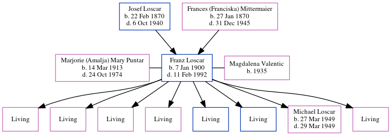

Franz Josef Loscar 1900 - 1992
[ Home ] | [ Calendar ] | [ Surnames Index ] | [ Census Index ] | [ Family History ]The child of Josef Loscar (a hatmaker) and Frances (Franciska) Mittermaier, Franz Loscar, the grandfather of Michele Copp (née Phillips), was born in Hamberg Niederrhein, Germany on Jan 7, 19001,2,3,4,5,6,7,8,9,10 and was married twice - to Marjorie (Amalja) Mary Puntar (in 1936 in Tucker, West Virginia, USA) Magdalena Valentic (in 1979 in Davis, West Virginia, following the death of Marjorie (Amalja) Mary on Oct 24, 1974)11. He had 8 children with Marjorie (Amalja) Mary Puntar: Sylvia Ann, Frances Rose, Nancy Carol, Marie Ellen, Francis Joseph jr, Edward Anthony, Michael and Linda Louise.
During his life, he was living in Essen, Essen, Nordrhein-Westfalen, Germany in 19229; in Pittsburgh, Allegheny, Pennsylvania in 19301; in Davis, Tucker, West Virginia in 19352; in Davis, West Virginia in 19402, in 19426 and in 19503; and in Davis, West Virginia, USA from 1997 to 200212. Draft registration cards compiled from multiple registrations beginning in 1940, for men 18 to 45 years old on Jan 7, 1900. In 1922 he traveled from Bremen to New York, New York, departing on 18 Oct, arriving on 30 Oct.
He died on Feb 11, 1992 in Davis, West Virginia5,7,8 and was buried in Thomas, Tucker County, West Virginia after Feb 11, 19927.
Parents
- Josef was born on Feb 22, 1870
- Frances (Franciska) was born on Jan 27, 1870
Children
- Michael was born on Mar 27, 1949
Citations
- 1930 United States Federal Census Online publication - Provo, UT, USA: MyFamily.com, Inc., 2002.Original data - United States of America, Bureau of the Census. Fifteenth Census of the United States, 1930. Washington, D.C.: National Archives and Records Administration, 1930. T626, 2,667 rol
- 1940 United States Federal Census Ancestry.com Operations, Inc. (Marital Status: Married; Relation to Head: Head)
- 1950 United States Federal Census Ancestry.com Operations, Inc. (Department of Commerce. Bureau of the Census. 1913-1/1/1972. Population Schedules for the 1950 Census, 1950 - 1950. Washington, DC: National Archives at Washington, DC. Population Schedules for the 1950 Census, 1950 - 1950. NAID: 43290879. Records of the Bureau of the Census, 1790 - 2007, Record Group 29. National Archives at Washington, DC., Washington, DC.) (Relation to Head: Head; Marital Status: Married)
- New York Passenger Lists, 1820-1957 Online publication - Provo, UT, USA: The Generations Network, Inc., 2006.Original data - Passenger Lists of Vessels Arriving at New York, New York, 1820-1897; (National Archives Microfilm Publication M237, 675 rolls); Records of the U.S. Customs Service, R
- Social Security Death Index Online publication - Provo, UT, USA: MyFamily.com, Inc., 2006.Original data - Social Security Administration. Social Security Death Index, Master File. Social Security Administration.Original data: Social Security Administration. Social Security Death Inde
- U.S. WWII Draft Cards Young Men, 1940-1947 Ancestry.com Operations, Inc. (Relation to Head: Self)
- U.S., Find A Grave Index, 1600s-Current Ancestry.com Operations, Inc.
- U.S., Social Security Applications and Claims Index, 1936-2007 Ancestry.com Operations, Inc.
- Web: Bremen, Germany, Passenger Lists Index, 1907-1939 Ancestry.com Operations, Inc. (Marital Status: single)
- West Virginia, Naturalization Records, 1814-1991 Ancestry.com Operations, Inc.
- West Virginia, Marriages Index, 1785-1971 Ancestry.com Operations, Inc.
- U.S. Phone and Address Directories, 1993-2002 Online publication - Provo, UT, USA: The Generations Network, Inc., 2005.Original data - 1993-2002 White Pages. Little Rock, AR, USA: Acxiom Corporation.Original data: 1993-2002 White Pages. Little Rock, AR, USA: Acxiom Corporation.
Family Tree
Generated by ged2site. Last updated on Jun 6, 2024